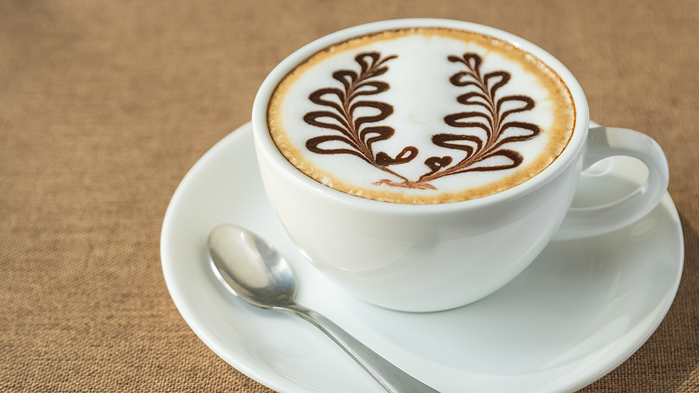
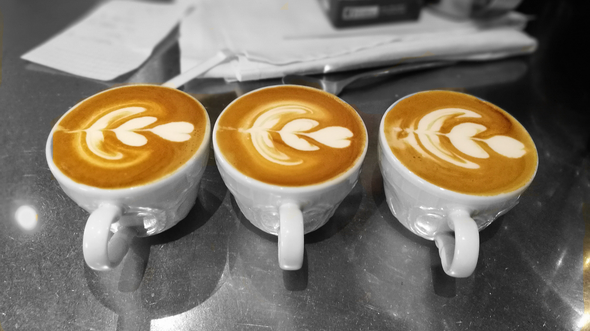
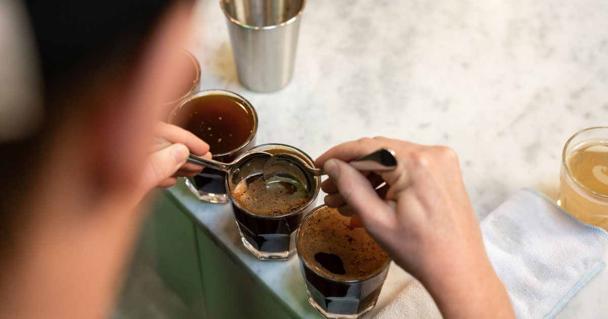

Mundo Cafetero

CAFÉ: TU DOSIS DIARIA DE BIENESTAR
El café es un bebida que se obtiene a partir de tostar y moler las semillas del cafeto. Es una bebida muy estimulante debido a los alcaloides que contiene, de ahí que muchas personas no puedan comenzar su día sin una taza de café.

CAFÉ PERFECTO: LOS SECRETOS
El famoso político francés Talleyrand decía que un buen café debe estar caliente como el infierno, negro como los ángeles puros y dulce como el amor. Estados Unidos, Alemania, Francia, Japón e Italia representan el 70% de la demanda mundial (Video referencial)

CAPUCHINO PERFECTO: EN 3 PASOS
Disfruta de un capuchino casero tan delicioso como el de tu cafetería favorita. Prepáralo fácilmente y sorprende tu paladar con sabores únicos y técnicas creativas. ¿Sueñas con un capuchino perfecto, con la espuma cremosa y el sabor intenso que te encanta?

¡ARTE LATTE: CAFÉ CON MAGIA!
¿Eres un apasionado del café casero y disfrutas de la espuma cremosa en tu taza? Entonces te encantará descubrir el Latte Art, una técnica que te permitirá convertir tus cafés en verdaderas obras de arte. Olvídate del café aburrido y monótono.

CAFÉ ÁCIDO: ¿ALIADO O ENEMIGO?
Más allá de un simple adjetivo, la acidez es un universo de sensaciones que define el carácter de tu café. No te dejes engañar por las primeras impresiones. La acidez no es sinónimo de agrio o desagradable, es un componente esencial que aporta brillo, viveza y complejidad a la taza

CAFETERÍA: EL ABC DE LA CATA
Descubre los secretos del café en cada taza. Más allá de una simple bebida, el café es una experiencia que involucra todos tus sentidos. En una cata de café, te embarcas en un viaje sensorial que te llevará a explorar las complejidades y matices.